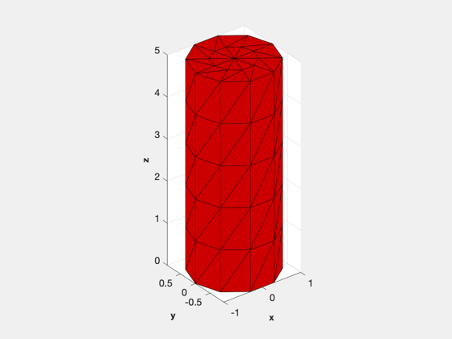
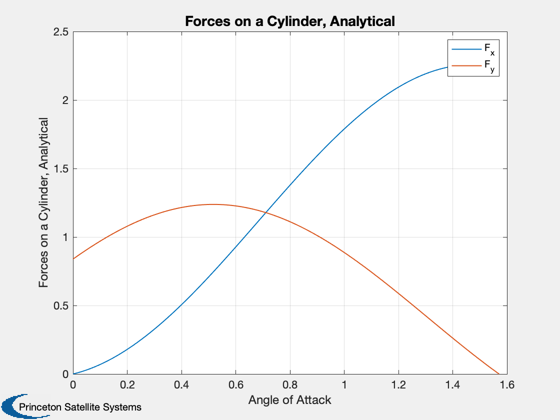
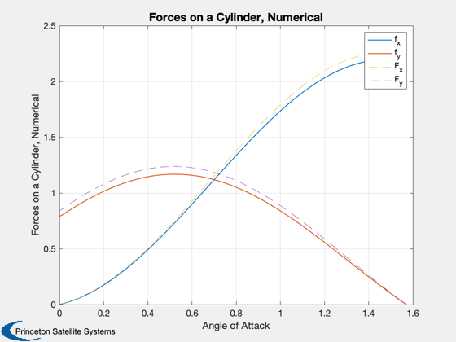

Contents
Surface accommodation drag on a cylinder
Numerically compute the coefficient of drag on a cylinder in free molecular flow and compare to the analytical solution. You can change the number of divisions in the mesh to see how it affects the accuracy of the numerical solution; 20 is much more accurate than 10.
Reference: Storch, J. ''Aerodynamic Disturbances on Spacecraft in Free-Molecular Flow,'' Aerospace Corp. tech report, 2002
------------------------------------------------------------------------ See also: GeomPatch, PolygonProps, DrawPatch, FAeroSurfaceAccommodation ------------------------------------------------------------------------
%-------------------------------------------------------------------------- % Copyright (c) 2022 Princeton Satellite Systems, Inc. % All rights reserved. %-------------------------------------------------------------------------- % Since version 2022.1 %--------------------------------------------------------------------------
Define the cylinder mesh
aCyl = 1; lCyl = 5; nS = 10; % number of divisions, compare 5 and 15 [v, f] = GeomPatch( struct('rU',aCyl,'rL',aCyl,'zUpper',lCyl,'zLower',0, 'n', nS) ); [area, n] = PolygonProps( v, f ); DrawPatch( v, f );
Single velocity vector, S~inf
Replicate figure 2.8 in Storch's paper, which plots the analytical solution for the forces on a cylinder
disp('Compute drag on a cylinder for Vw/V=0.05 and s=inf') % Atmosphere properties r = 8.314; % Gas constant, J/mol-K rho = 2.118338996643465e-13; % density, kg/m3 mG = 17.06700873108905*1e-3; % mean molecular weight, kg/mol % Spacecraft orbital velocity (flow antivelocity) U = sqrt(3.98600436e5/6928)*1000; % m/s u = U*[1;0;0]; % vB = sqrt(0.5*pi*r*tB/m); % Vw in Storch tB = (0.05*U)^2*2/pi/r*mG; tA = 1; % produces S near infinity d.area = area'; d.normal = n'; d.temperature = tB*ones(1,length(area)); sigmaN = 0.7; sigmaT = 0.7; disp('Numerical solution, normal flow:') [fT,cD,cL] = FAeroSurfaceAccommodation( -u, rho, tA, mG, d, sigmaN, sigmaT ) disp('f/(rho*V^2*a*l)') fT/rho/U^2/aCyl/lCyl disp('Numerical solution, tangential flow:') u = U*[0;0;1]; [fT,cD,cL,f] = FAeroSurfaceAccommodation( -u, rho, tA, mG, d, sigmaN, sigmaT ); disp('f/(rho*V^2*a*l)') fT/rho/U^2/aCyl/lCyl
Compute drag on a cylinder for Vw/V=0.05 and s=inf
Numerical solution, normal flow:
fT =
0.00013261
4.5528e-21
1.6025e-22
cD =
2.2881
cL =
7.8604e-17
f/(rho*V^2*a*l)
ans =
2.1761
7.4711e-17
2.6297e-18
Numerical solution, tangential flow:
f/(rho*V^2*a*l)
ans =
1.7786e-16
6.5749e-21
0.78972
Vector forces on the cylinder, expected and numerical solution
Vw = sqrt(0.5*pi*r*tB/mG); f_x = @(x) 1/6*sin(x).*(4*(4+sigmaT-2*sigmaN)*sin(x) + 6*pi*aCyl/lCyl*sigmaT*cos(x) + 2*pi*sigmaN*Vw/U); f_y = @(x) cos(x).*(2*sigmaT*sin(x) + pi*aCyl/lCyl*(2-sigmaN)*cos(x)+pi*aCyl/lCyl*Vw/U*sigmaN); beta = linspace(0,pi/2); Plot2D(beta,[f_x(beta);f_y(beta)],'Angle of Attack','Forces on a Cylinder, Analytical') legend('F_x','F_y') u = -U*[sin(beta);zeros(size(beta));cos(beta)]; [fT,cD,cL] = FAeroSurfaceAccommodation( u, rho, tA, mG, d, sigmaN, sigmaT ); fac = rho*U^2*aCyl*lCyl; Plot2D(beta,fT([1 3],:)/fac,'Angle of Attack','Forces on a Cylinder, Numerical') hold on plot(beta,[f_x(beta);f_y(beta)],'--') legend('f_x','f_y','F_x','F_y') %-------------------------------------- 